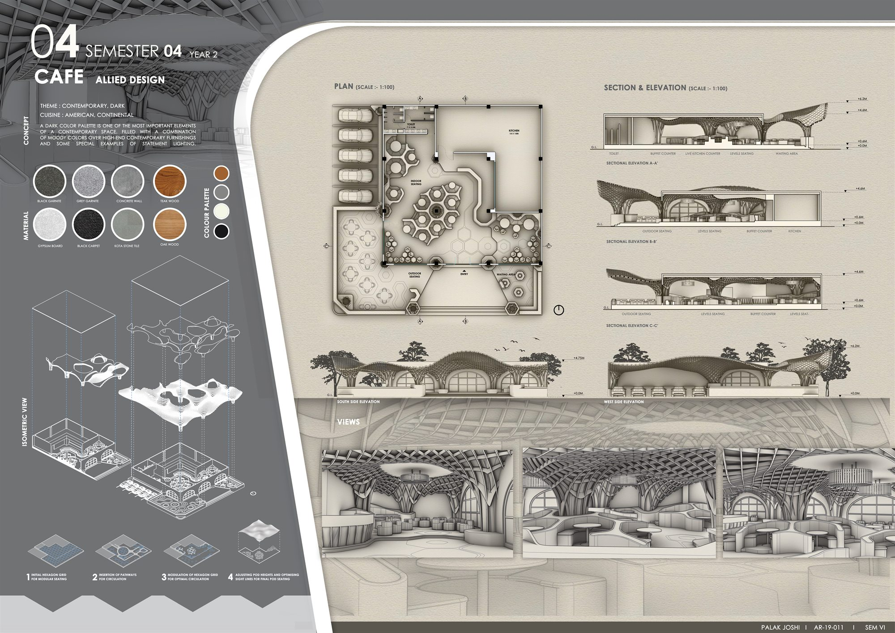

- Type
- Allied design (interior), Semester 4
- Year
- 2021
- Theme
- Contemporary, dark
- Cuisine
- American, continental
- Scope
- Space planning, parametric ceiling, materials, furniture layout, sections and elevations
A dark palette of black and grey granite, concrete, Kota stone, black carpet, teak and oak sets a moody backdrop for contemporary furnishings and a few pieces of statement lighting. Overhead, a parametric timber canopy grows out of tree-like columns and opens into arched windows.
Seating was laid out on a hexagonal grid. Pathways were cut through it for circulation, the grid was modulated to ease movement, and finally the height of each seating pod was adjusted to keep sight lines open across the room.
01Plan, sections and isometric
Drawn at 1:100: the plan with indoor, levelled and outdoor seating, a buffet counter, live kitchen and waiting area; three sectional elevations through the canopy; and an exploded isometric of the ceiling, floor and furniture.


